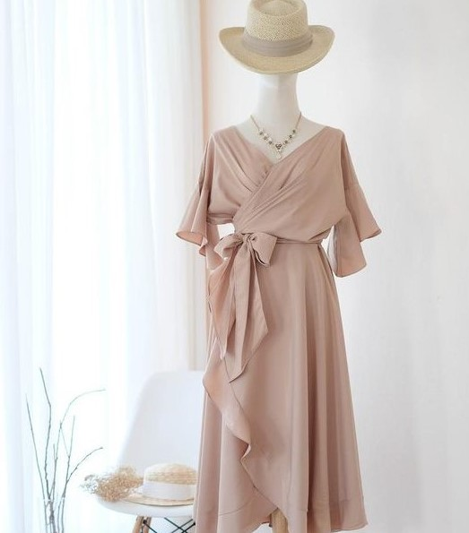
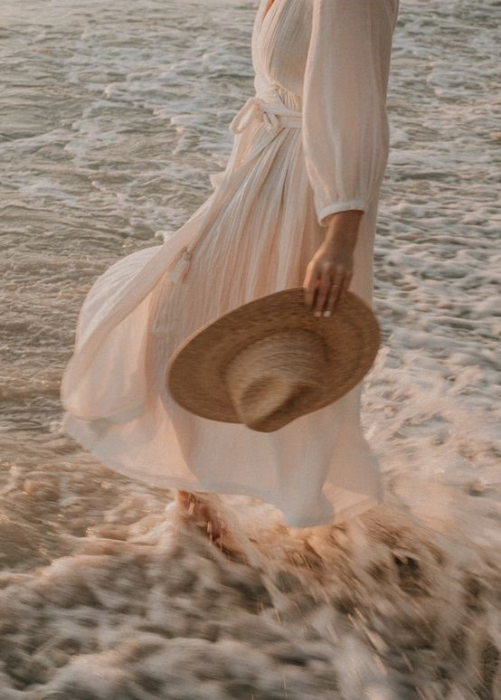
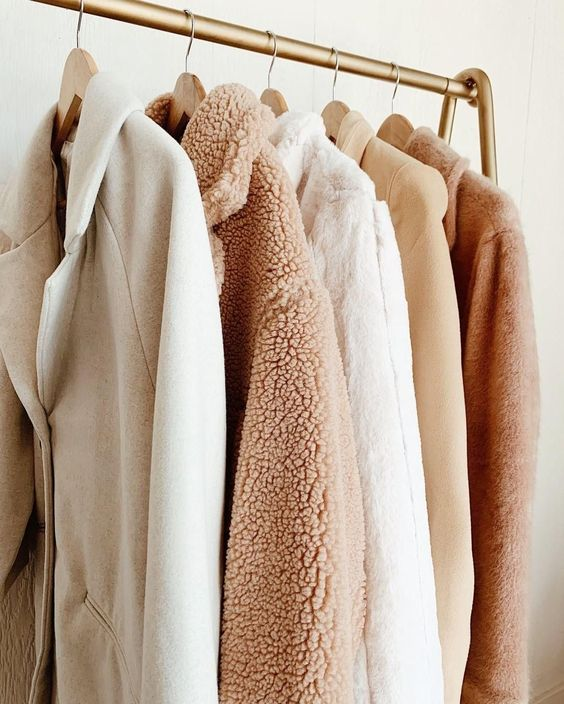
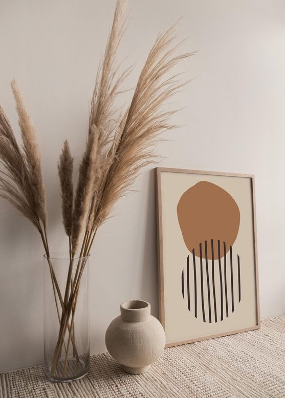
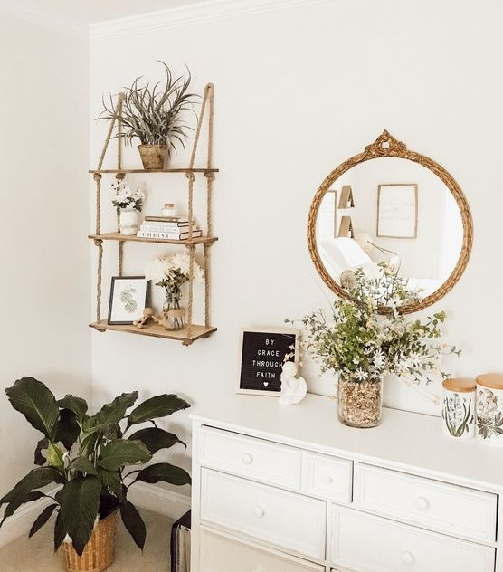
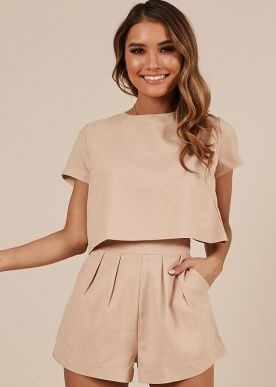
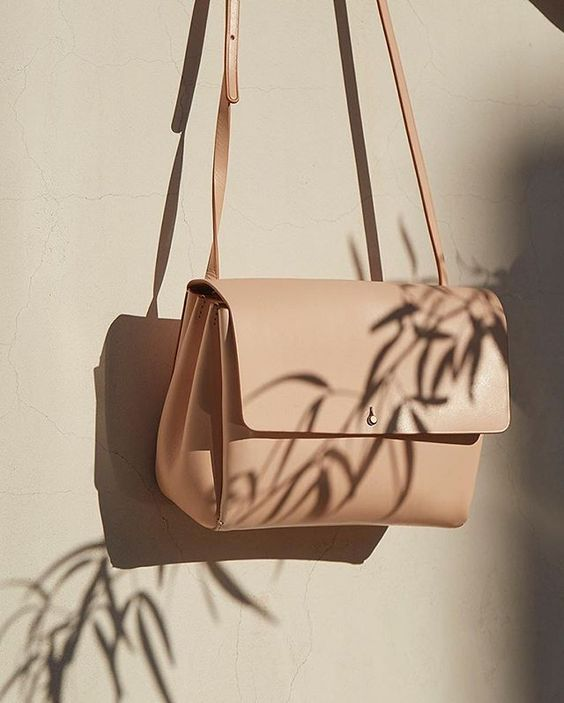
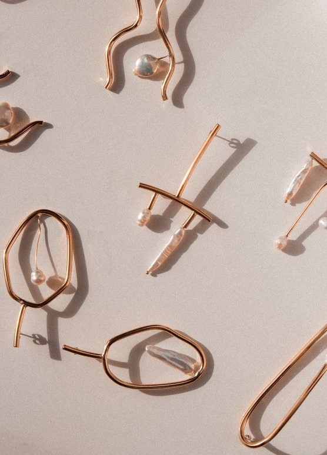

|
We believe we can |
||
|  |
Our Radical Transparency. At Kami, we want the right choice to be as easy as putting on a great T-shirt. That’s why we partner with the best, ethical factories around the world. Source only the finest materials. And share those stories with you - down to the true cost of every product we make. It’s a new way of doing things. We call it Radical Transparency. |
|  |  |  |
|
Our ethical approach. We spend months finding the best factories around the world - the same ones that produce your favorite designer labels. We visit them often and build strong personal relationships with the owners. Each factory is given a compliance audit to evaluate factors like fair wages, reasonable hours, and environment. Our goal? A score of 90 or above for every factory. |
 |
|  |  |  |
|
Designed to Last. At Kami, we’re not big on trends. We want you to wear our pieces for years, even decades, to come. That’s why we source the finest materials and factories for our timeless products - like our Grade-A cashmere sweaters, Italian shoes, and Peruvian Pima tees |